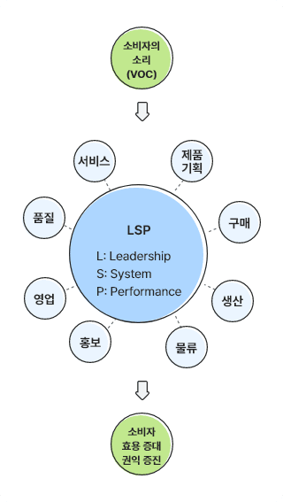

CCM(소비자중심경영)의 개념
소비자중심경영, 즉 CCM은 기업이 수행하는 모든 활동을 소비자 관점에서 소비자 중심으로 구성하고, 관련 경영활동을 지속적으로 개선하고 있는지를 평가하여 인증하는 제도입니다.

소비자의 소리(VOC)
-
LSP - L:Leadership, S:System, P:Performance
- 서비스
- 품질
- 영업
- 홍보
- 물류
- 생산
- 구매
- 제품기획
소비자 효용 증대 권익 증진
CCM의 목적
CCM 인증제도는 기업 및 기관의 소비자 지향적 경영문화 확산과 소비자 권익 증진 노력을 통한 경쟁력 강화 및 소비자 후생 증대에 기여함을 목적으로 합니다.